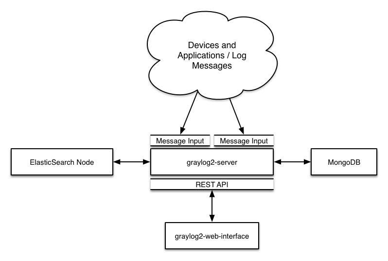

Architectural considerations¶
There are a few rules of thumb when scaling resources for Graylog:
graylog-servernodes should have a focus on CPU power.- Elasticsearch nodes should have as much RAM as possible and the fastest disks you can get. Everything depends on I/O speed here.
- MongoDB is only being used to store configuration and the dead letter messages, and can be sized fairly small.
graylog-web-interfacenodes are mostly waiting for HTTP answers of the rest of the system and can also be rather small.graylog-radionodes act as workers. They don’t know each other and you can shut them down at any point in time without changing the cluster state at all.
Also keep in mind that messages are only stored in Elasticsearch. If you have data loss on Elasticsearch, the messages are gone - except if you have created backups of the indices.
MongoDB is only storing meta information and will be abstracted with a general database layer in future versions. This will allow you to use other databases like MySQL instead.
Minimum setup¶
This is a minimum Graylog setup that can be used for smaller, non-critical, or test setups. None of the components is redundant but it is easy and quick to setup.
Bigger production setup¶
This is a setup for bigger production environments. It has several graylog-server nodes behind
a load balancer that share the processing load. The load balancer can ping the graylog-server
nodes via REST/HTTP to check if they are alive and take dead nodes out of the cluster.

Highly available setup with Graylog Radio¶
Beginning with Graylog 1.0 on, we no longer recommend running Graylog Radio because we are now using a high-performant message journal (from the Apache Kafka project) in every graylog-server instance which is spooling all incoming messages to disk immediately and is able to buffer load spikes just at least as good as Graylog Radio was, but with less dependencies and maintenance overhead.
If you are running a setup with Graylog Radio we recommend to shut down the Graylog Radio architecture including AMQP or Kafka brokers completely and directly send messages to the graylog-server nodes. If you have been using Graylog Radio for load balancing, you should now put a classic load balancer in front of your graylog-server nodes.
This approach has been proven to work great in large high-throughput setups of several of our large scale customers and immensely reduced complexity of their setups.
The Kafka and AMQP inputs are still supported and can be used to build a custom setup using message brokers, if you want to keep using that. A reason for this might be that Graylog is not the only subscriber to the messages on the bus. However we would recommend to use Graylog forwarders to either write to a message bus after processing or write to other systems directly.